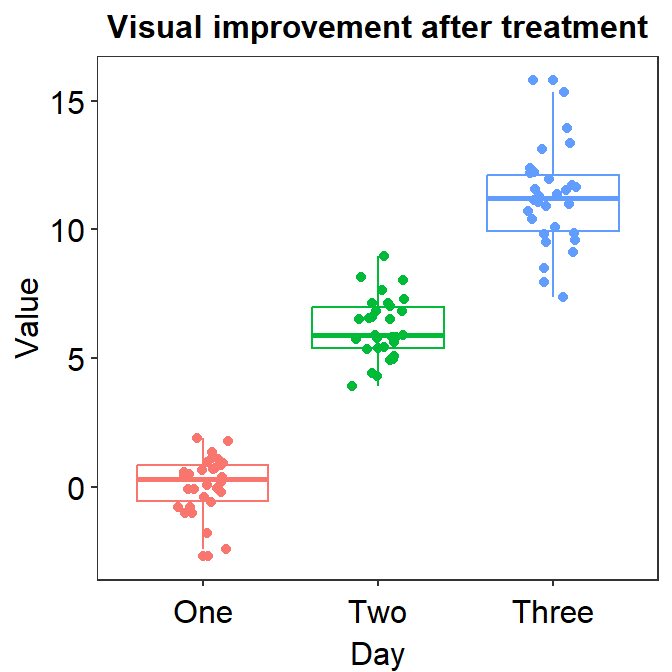
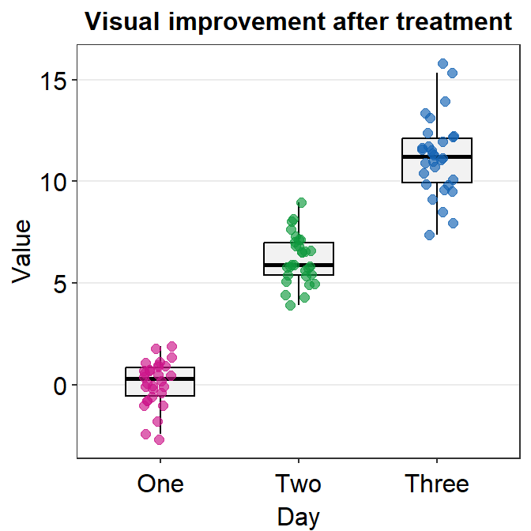
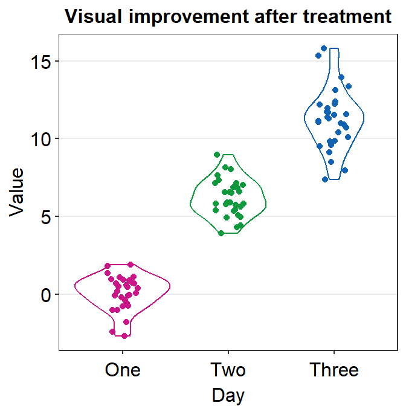
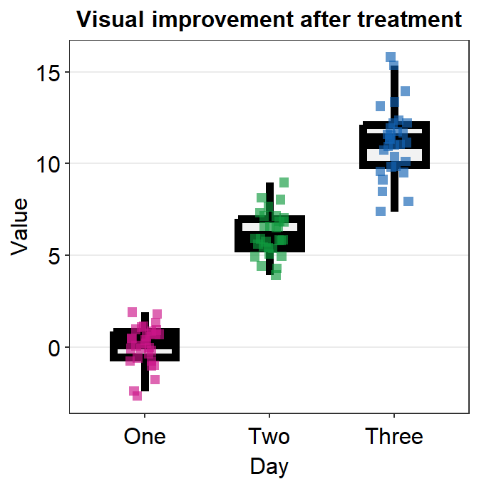
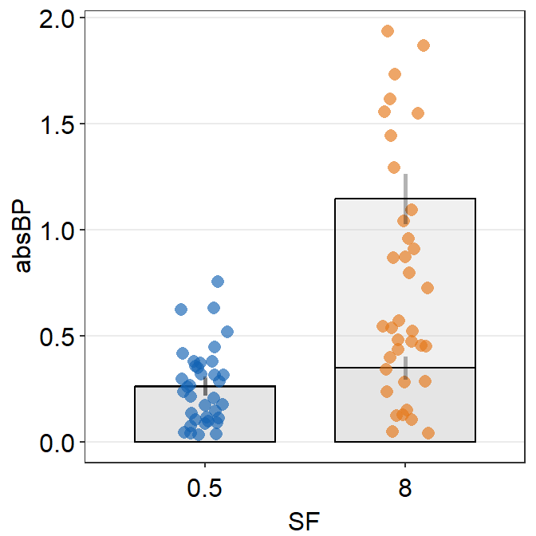

Chapter 4 Manual and Examples of smplot
This chapter is a manual for smplot; it includes numerous examples. It also includes tutorials about sm_bar(), sm_bland_altman() and sm_raincloud(), all of which are not mentioned in the preceding chapters. However, this chapter does not describe sm_effsize(), sm_power() and sm_common_axis(); these functions are described in Chapters 5-7.
- If you are not sure about any of the functions, please type
?before the function names, ex.?sm_bar.
4.1 Installation of the Package
- The smplot package is NOT available on CRAN yet. So, you will need to download it directly from my github for now.
- To install it, please type in the R console:
install.packages('devtools')
devtools::install_github('smin95/smplot')- To use the package, load it:
library(smplot)What is smplot?
- smplot is a package that provides functions that visually improve graphs produced from ggplot2.
- So it does not work with plots made from base R.
- It was first developed in May 2021.
- It is free and open source (https://github.com/smin95/smplot).
4.2 Colors and Graph Themes of smplot
smplot’s color palette
- Its color palette can be accessed via two functions:
sm_color()andsm_palette(). sm_color()accepts the character string of the color name.sm_palette()accepts the number of colors (up to 20) and returns the hex codes accordingly.

Figure 4.1: smplot’s color palette
- For example, if you want
blueandred, just type the input like this:
sm_color('blue','red')## [1] "#1262b3" "#cc3d3d"- But, do not form a single vector that contains two characters. If so,
sm_color()will only return the first color.
sm_color(c('blue','red'))## Warning in if (color == "blue") return("#1262b3"): the condition has length > 1 and
## only the first element will be used## [1] "#1262b3"- If you need 5 colors, you can use
sm_palette().
sm_palette(5)## [1] "#cc1489" "#1262b3" "#5b4080" "#e57717" "#0f993d"smplot’s graph themes
- There are several graph themes. The text positions and the font are all similar.
sm_corr_theme()andsm_hvgrid()are equivalent. They have major horizontal and vertical grids.sm_hgrid()has major horizontal grids.This is the default theme ofsm_raincloud(), which creates a raincloud plot.sm_minimalhas no major grid. This is useful when a graph has a lot of annotation, such as texts and arrows.sm_slope_theme()is a theme for a slope chart. It removes everything except the y-axis. This is the default theme ofsm_slope().sm_classic()has no grid. This is useful for all types of plots, such as bar graph, correlation plot and Bland-Altman plot. It has a typical x-axis and y-axis without panel borders. The Bland-Altman plot created using smplot usessm_classic()automatically.sm_vgrid()has major vertical grids.- All of these functions, except for
sm_slope_theme()andsm_minimal(), have two arguments:bordersandlegends. The two exceptions only have the argumentlegends.- For some of these functions, the defaults are set to
borders = TRUEandlegends = TRUE. - You can check the defaults by typing
?in front of the function. Ex:?sm_corr_theme
- For some of these functions, the defaults are set to
- Let’s explore these themes in depth. First, let’s create
p1, which has the default theme of ggplot2.
library(tidyverse)
p1 <- ggplot(data = mpg, mapping = aes(x = displ, y = hwy, color = class)) +
geom_point(size = 2)
p1
- Now we can change the theme using
sm_corr_theme().
p1 + sm_corr_theme()
- We can also remove
bordersandlegendsby setting them asFALSE.
p2 <- p1 + sm_corr_theme(borders = FALSE, legends = FALSE)
p2
- You can also apply smplot’s colors by using
scale_color_manual().
p2 + scale_color_manual(values = sm_palette(7))
- We can also apply
sm_hgrid().
p1 + sm_hgrid()
- Let’s try
sm_vgrid().
p1 + sm_vgrid()
- You can remove the legend as shown below.
p1 + sm_vgrid(legends = FALSE)
sm_classic()is one of my favourites!
p1 + sm_classic()
- You can add the legend as shown below.
p1 + sm_classic(legends = TRUE)
- Another choice is
sm_minimal().
p1 + sm_minimal()
- You can choose to include the legend in
sm_minimal().
p1 + sm_minimal(legends = TRUE)
4.3 Correlation Plot
sm_corr_theme()andsm_statCorr()can be used as a pair when plotting a correlation.This is the plot using the default theme of ggplot2.
p1 <- ggplot(data = mtcars, mapping = aes(x = drat, y = mpg)) +
geom_point(shape = 21, fill = sm_color('green'), color = 'white', size = 3)
p1
- The next plot uses
sm_corr_theme()to apply the smplot’s theme andsm_statCorr()to print linear regression slope and statistical results from a paired correlation test (Pearson’s). - Important:
sm_statCorr()recognizes the data for the y- and x-axes from themapping = aes()inggplot()function.- There is no
mappingargument insm_statCorr().
- There is no
p1 + sm_corr_theme() +
sm_statCorr(color = sm_color('green'))- You can also change the
line_typeto'solid'insm_statCorr(), and change the location of the printed texts by usinglabel_xandlabel_yarguments. - You can also change the font size of the printed texts by setting
text_sizeto a larger numerical value.
p1 + sm_corr_theme() +
sm_statCorr(color = sm_color('green'),
line_type = 'solid',
label_x = 3.7,
label_y = 11,
text_size = 5)
4.3.1 Data frame for a correlation plot
Column 1 has to be the data for x-axis.
Column 2 has to be the data for y-axis.
This structure of the data frame is slightly different from that is typically used in ggplot2 and smplot functions (ex.
sm_boxplot(),sm_bar(),sm_violin()andsm_raincloud()).Correlation plot and a bar plot requires a different data frame structure.
# Example
set.seed(11) # generate random data
method1 = c(rnorm(19,0,1),2.5)
method2 = c(rnorm(19,0,1),2.5)
Subject <- rep(paste0('S',seq(1:20)), 2)
Data <- data.frame(Value = matrix(c(method1,method2),ncol=1))
Method <- rep(c('Method 1', 'Method 2'), each = length(method1))
df_general <- cbind(Subject, Data, Method) # used for sm_bar(), sm_boxplot(), sm_violin(), etc
df_corr <- data.frame(first = method1, second = method2) # used for correlation- We have created two data frames:
df_generalanddf_corr. Let’s take a look at their structures.
head(df_general)## Subject Value Method
## 1 S1 -0.59103110 Method 1
## 2 S2 0.02659437 Method 1
## 3 S3 -1.51655310 Method 1
## 4 S4 -1.36265335 Method 1
## 5 S5 1.17848916 Method 1
## 6 S6 -0.93415132 Method 1- Notice that
df_generalhas three columns. The first column is subject, second column is data (i.e.,Value) and third column is measurement group.
head(df_corr)## first second
## 1 -0.59103110 -0.65571812
## 2 0.02659437 -0.68251762
## 3 -1.51655310 -0.01585819
## 4 -1.36265335 -0.44260479
## 5 1.17848916 0.35255750
## 6 -0.93415132 0.07317058- Notice that
df_corrhas two columns, each of which represents a measurement group.
# correlation plot using data frame 'df_corr'
ggplot(data = df_corr, mapping = aes(x = first, y = second)) +
geom_point(shape = 21, fill = sm_color('crimson'), color = 'white',
size = 3) + sm_corr_theme(borders = FALSE) +
scale_y_continuous(limits = c(-2.5,2.5)) +
scale_x_continuous(limits = c(-2.5,2.5)) +
sm_statCorr(color = sm_color('crimson'), corr_method = 'pearson',
label_x = -2.2, label_y = 2.3) +
ggtitle('Correlation plot') +
xlab('Method 1') + ylab('Method 2') 
# bar graph using data frame 'df_general'
ggplot(data = df_general, mapping = aes(x = Method, y = Value, fill = Method)) +
sm_bar(shape = 21, color = 'white', bar_fill_color = 'gray80') +
scale_fill_manual(values = sm_color('crimson','green'))
4.3.2 Correlation plot with both regression and reference lines
- You can also add a reference line (slope = 1) in a correlation plot.
- This can be done with
geom_abline(). In this example, the reference line’s slope is set to 1 and it has a dashed line style.
# correlation plot using data frame 'df_corr'
ggplot(data = df_corr, mapping = aes(x = first, y = second)) +
geom_point(shape = 21, fill = sm_color('crimson'), color = 'white',
size = 3) + sm_corr_theme(borders = FALSE) +
geom_abline(slope = 1, linetype = 'dashed') +
scale_y_continuous(limits = c(-2.8,2.8), expand = c(0,0)) +
scale_x_continuous(limits = c(-2.8,2.8), expand = c(0,0)) +
sm_statCorr(color = sm_color('crimson'), corr_method = 'pearson',
label_x = -2.2, label_y = 2.3) +
ggtitle('Correlation plot') +
xlab('Method 1') + ylab('Method 2') 
4.4 Boxplot - sm_boxplot()
sm_boxplot()generates a boxplot and individual points at the same time.- It automatically uses
sm_hgrid()as its default theme. - It also has arguments
bordersandlegends, both of which have been set toFALSEas defaults. - First, let’s generate some random data.
set.seed(1) # generate random data
day1 = rnorm(16,0,1)
day2 = rnorm(16,5,1)
Subject <- rep(paste0('S',seq(1:16)), 2)
Data <- data.frame(Value = matrix(c(day1,day2),ncol=1))
Day <- rep(c('Day 1', 'Day 2'), each = length(day1))
df <- cbind(Subject, Data, Day)- Now, let’s make a boxplot using
sm_boxplot().
# a boxplot with the random data, all black points
ggplot(data = df, mapping = aes(x = Day, y = Value)) +
sm_boxplot(fill = 'black')- Now let’s apply different color for each Day.
# a boxplot with different colored points
ggplot(data = df, mapping = aes(x = Day, y = Value, fill = Day)) +
sm_boxplot(shape = 21, color = 'white') +
scale_fill_manual(values = sm_color('blue','orange'))
- You can change the shape of the boxplot by setting
notch = TRUE. You can also change the size of the individual points usingpoint_sizeargument. - A notched boxplot shows the confidence interval around the median (+/- 1.58 * interquartile range / sqrt(n)).
- The notches are used for group comparison.
- If the notch of each box does not overlap, there is a strong likelihood that the medians are significantly different between groups.
ggplot(data = df, mapping = aes(x = Day, y = Value, fill = Day)) +
sm_boxplot(shape = 21, point_size = 4, notch = 'TRUE', alpha = 0.5) +
scale_fill_manual(values = sm_color('blue','orange'))4.4.1 Plotting individual points with unique colors
- One can also use
sm_boxplot()to plot individual points with unique colors. - However,
sm_boxplot()cannot print distinct box colors across distinct x levels (i.e., in this example, all boxes are grey). This is because I think that it is not a good practice to print different colors of boxes when each point has unique color as well.
ggplot(data = df, mapping = aes(x = Day, y = Value, fill = Subject)) +
sm_boxplot(shape = 21, color = 'white') +
scale_fill_manual(values = sm_palette(16))4.5 Violin Plot - sm_violin()
sm_violin()plots a violin plot, individual points and lines that indicate means and +/- 1 standard deviation at the same time.- It is very similar to
sm_boxplot()except there is no option fornotch = TRUEinsm_violin(). - Also
sm_violin()uses bothcolor(for the lines of mean and SD) andfill(for the colors of the points) arguments. - The default border color of the points is
white. sm_violin()automatically usessm_hgrid()as its default theme.- It also has arguments
bordersandlegends, both of which have been set toFALSEas defaults.
# a violin plot with the random data, all black points and lines
ggplot(data = df, mapping = aes(x = Day, y = Value)) +
sm_violin(fill = 'black') 
# a violin plot with different colored points and lines
ggplot(data = df, mapping = aes(x = Day, y = Value, color = Day)) +
sm_violin() +
scale_color_manual(values = sm_color('blue','orange'))4.5.1 Plotting individual points with unique colors
- One can also use
sm_violin()to plot individual points with unique colors. - The x-level has to be grouped in the aesthetics (ex.
group = Day). - But
sm_violin()cannot print distinct violin colors across distinct x levels (i.e., in this example, all violins are grey). This is because it is aesthetically distracting to assign different colors of the violin across distinct x-levels.
ggplot(data = df, mapping = aes(x = Day, y = Value, fill = Subject,
group = Day)) +
sm_violin(shape = 21, color = 'white', point_alpha = 0.6) +
scale_fill_manual(values = sm_palette(16)) 
ggplot(data = df, mapping = aes(x = Day, y = Value, fill = Subject,
group = Day, color = Day)) +
sm_violin(shape = 21, color = 'white', point_alpha = 0.6) +
scale_fill_manual(values = sm_palette(16)) +
scale_color_manual(values = sm_color('blue', 'orange'))4.6 Bar Plot - sm_bar()
sm_bar()automatically usessm_bar_theme()/sm_hgrid().- It also has arguments
bordersandlegends, both of which have been set toFALSEas defaults. - Let’s use data (
df) we generated before.
ggplot(data = df, mapping = aes(x = Day, y = Value, fill = Day)) +
sm_bar(shape = 21, color = 'white', bar_fill_color = 'gray80') +
scale_fill_manual(values = sm_color('blue','orange'))
- In this case, the error bar represents standard error. If you prefer to show standard deviation, then you should set
errorbar_type = 'sd'insm_bar().
ggplot(data = df, mapping = aes(x = Day, y = Value, fill = Day)) +
sm_bar(shape = 21, color = 'white', bar_fill_color = 'gray80', errorbar_type = 'sd') +
scale_fill_manual(values = sm_color('blue','orange'))
- 95% confidence interval can also be displayed with
errorbar_type = 'ci'.
ggplot(data = df, mapping = aes(x = Day, y = Value, fill = Day)) +
sm_bar(shape = 21, color = 'white', bar_fill_color = 'gray80', errorbar_type = 'ci') +
scale_fill_manual(values = sm_color('blue','orange'))
- You can also make the bar slightly transparent by setting
bar_alphato less than 1.
ggplot(data = df, mapping = aes(x = Day, y = Value, fill = Day)) +
sm_bar(shape = 21, color = 'white', bar_fill_color = 'gray80',
errorbar_type = 'ci', bar_alpha = 0.7) +
scale_fill_manual(values = sm_color('blue','orange'))
4.6.1 Plotting individual points with unique colors
- One can also use
sm_bar()to plot individual points with unique colors.
ggplot(data = df, mapping = aes(x = Day, y = Value, color = Subject)) +
sm_bar(bar_fill_color = 'gray80') +
scale_color_manual(values = sm_palette(16)) 
sm_bar()can also print distinct box colors across distinct x levels.
ggplot(data = df, mapping = aes(x = Day, y = Value, color = Subject,
fill = Day)) +
sm_bar() +
scale_color_manual(values = sm_palette(16)) +
scale_fill_manual(values = sm_color('yelloworange','skyblue'))
4.7 Slope Chart - sm_slope()
sm_slope()plots a slope chart.- It also has the argument
legends, which has been set toFALSEas the default. - A slope chart is useful to describe changes between two different timepoints for each measurement (ex. a participant).
- It automatically uses
sm_slope_theme(). - Let’s use
dfthat we generated before. - Important: To make this function work, the
mappingwithinggplot()has to have a certain structure.- x- and y-axes have to be defined.
- A slope chart groups each observation (ex.
Subject) across x-axis. This has to be specified inmappingasgroup =.
- The x-axis cannot be continuous. It has to be discrete. So, it should take the form of
characterorfactor(ex. ‘One’, ‘Two’, ‘Three’). If x-axis only has number (i.e.,doubleform, such as 1.02, 1.05, 1.5), thensm_slope()will produce an error. labelsargument is required to usesm_slope(). This refers to the labels of the ticks in the x-axis. Ex.labels = c('Day 1', 'Day 2').
ggplot(data = df, mapping = aes(x = Day, y = Value, group = Subject)) +
sm_slope(labels = c('Day 1', 'Day 2'))
- Let’s set the shape to 21.
- Let’s make the border color to
white. - Let’s apply the same color to each Day.
ggplot(data = df, mapping = aes(x = Day, y = Value, group = Subject)) +
sm_slope(labels = c('Day 1','Day 2'), shape = 21, color = 'white', fill = sm_color('blue'))
- You could also apply different color for each
Dayusingscale_fill_manual().
ggplot(data = df, mapping = aes(x = Day, y = Value, group = Subject, fill = Day)) +
sm_slope(labels = c('Day 1','Day 2'), shape = 21, color = 'white') +
scale_fill_manual(values = sm_color('blue','orange'))
- You can also change the line color and other aesthetics. For more information, please type
?sm_slope.
ggplot(data = df, mapping = aes(x = Day, y = Value, group = Subject, fill = Day)) +
sm_slope(labels = c('Day 1','Day 2'), shape = 21, color = 'white',
fill = sm_color('blue'), line_color = '#bfd5db',
line_size = 0.6)
4.8 A Bland Altman Plot - sm_bland_altman()
sm_bland_altman()andsm_statBlandAlt()functions can be used to create a Bland-Altman plot.- The plot is used to measure agreement between two different measurements.
- It is also used to measure test-retest variability of a method.
- Let’s generate random data.
set.seed(1)
first <- rnorm(20)
second <- rnorm(20)
df3 <- as_tibble(cbind(first,second)) # requires library(tidyverse)- Now let’s draw a Bland Altman plot using
sm_bland_altman(), which requires two arguments: first dataset, second dataset. They have to be numerical vectors of equal length.- This function automatically uses
sm_classic()theme.
- This function automatically uses
sm_bland_altman(df3$first, df3$second, color = sm_color('green')) +
scale_y_continuous(limits = c(-4,4))
- The upper dashed line represents the upper limit of the difference between two measurements (mean difference + 1.96 * standard deviation of the difference).
- The lower dashed line represents the lower limit of the difference between two measurements (mean difference - 1.96 * standard deviation of the difference).
- The middle dashed line represents the mean difference.
- The shaded region is the 95% confidence interval of the difference between the two measurements from one-sample t-test (difference vs 0).
- If the shaded region includes 0 in the y-axis, then there is no significant difference (p > 0.05) between 0 and the difference.
- If it does not include 0, then there is a significant difference. This indicates that the two measurement results are considerably different.
- I usually label them with
annotate(), which is a function from ggplot2. This process can be tedious. - Also,
sm_statBlandAlt()calculates the statistical values that are necessary to draw a Bland-Altman plot, such as the mean difference, upper and lower limits. This function is used to annotate the values in the plot.- The arguments for this function are first and second datasets, just like in
sm_bland_altman().
- The arguments for this function are first and second datasets, just like in
res <- sm_statBlandAlt(df3$first,df3$second) # store the results in res variable
sm_bland_altman(df3$first, df3$second, color = sm_color('green')) +
scale_y_continuous(limits = c(-4,4)) +
annotate('text', label = 'Mean', x = -1, y = res$mean_diff + 0.4) +
annotate('text', label = signif(res$mean_diff,3), x = -1, y = res$mean_diff - 0.4) +
annotate('text', label = 'Upper limit', x = 1.2, y = res$upper_limit + 0.4) +
annotate('text', label = signif(res$upper_limit,3), x = 1.2, y = res$upper_limit - 0.4) +
annotate('text', label = 'Lower limit', x = 1.2, y = res$lower_limit + 0.4) +
annotate('text', label = signif(res$lower_limit,3), x = 1.2, y = res$lower_limit-0.4)
- Let’s change the border color of the circles to white. To do so, we will have to change their shape to 21.
sm_bland_altman(df3$first, df3$second, shape = 21, fill = sm_color('green'), color = 'white') +
scale_y_continuous(limits = c(-4,4)) +
annotate('text', label = 'Mean', x = -1, y = res$mean_diff + 0.4) +
annotate('text', label = signif(res$mean_diff,3), x = -1, y = res$mean_diff - 0.4) +
annotate('text', label = 'Upper limit', x = 1.2, y = res$upper_limit + 0.4) +
annotate('text', label = signif(res$upper_limit,3), x = 1.2, y = res$upper_limit - 0.4) +
annotate('text', label = 'Lower limit', x = 1.2, y = res$lower_limit + 0.4) +
annotate('text', label = signif(res$lower_limit,3), x = 1.2, y = res$lower_limit-0.4)
4.9 Raincloud plot - sm_raincloud()
sm_raincloud()generates a raincloud plot.- It also has arguments
bordersandlegends. The the default of the former has been set asTRUEand that of the latter asFALSE. - A raincloud plot is a combination of jittered points, a boxplot and a violin plot.
- However, this plot can be visually crowded. Some people like to use raincloud plots, some do not. So, the choice to use it is entirely yours.
- Let’s generate some random data.
set.seed(2) # generate random data
day1 = rnorm(20,0,1)
day2 = rnorm(20,5,1)
day3 = rnorm(20,6,1.5)
day4 = rnorm(20,7,2)
Subject <- rep(paste0('S',seq(1:20)), 4)
Data <- data.frame(Value = matrix(c(day1,day2,day3,day4),ncol=1))
Day <- rep(c('Day 1', 'Day 2', 'Day 3', 'Day 4'), each = length(day1))
df2 <- cbind(Subject, Data, Day)- The x-axis variable column has to have the right level. If not, you should convert the column as factor and establish the levels correctly.
- Now let’s draw a raincloud plot using
sm_raincloud().
sm_raincloud(data = df2, x = Day, y = Value) 
- Let’s change the x-axis labels.
sm_raincloud(data = df2, x = Day, y = Value) +
scale_x_continuous(limits = c(0.25,4.75), labels = c('First', 'Second', 'Third', 'Fourth'), breaks = c(1,2,3,4)) +
xlab('Day') 
- The filling colors of the violin plots and boxplots can be modified by using
scale_fill_manual(). - The border color of the violin plot can be changed by using
scale_color_manual().- I will set it
transparentto remove the border of the violin plots.
- I will set it
- The color of the points can be used by either of the 2 functions depending on the shape, which can be set within
sm_raincloud().
sm_raincloud(data = df2, x = Day, y = Value, boxplot_alpha = 0.5,
color = 'white', shape = 21, sep_level = 2) +
scale_x_continuous(limits = c(0.25,4.75), labels = c('One', 'Two', 'Three', 'Four'), breaks = c(1,2,3,4)) +
xlab('Day') +
scale_color_manual(values = rep('transparent',4)) +
scale_fill_manual(values = sm_palette(4))
sep_levelis an argument to specify the degree of separation among points, boxplots and violin plots. Whensep_level = 0, they will all be crowded. Whensep_level = 4, they will all be separated from each other.- I personally prefer when the boxplot and violin plots are together, but not the points. So I set the default to
sep_level = 2. - Shown below is an example when
sep_level = 4with a grid themesm_minimal().
- I personally prefer when the boxplot and violin plots are together, but not the points. So I set the default to
sm_raincloud(data = df2, x = Day, y = Value, boxplot_alpha = 0.5,
color = 'white', shape = 21, sep_level = 4) +
scale_x_continuous(limits = c(0.25,4.75), labels = c('1', '2', '3', '4'), breaks = c(1,2,3,4)) +
xlab('Day') +
scale_color_manual(values = rep('transparent',4)) +
scale_fill_manual(values = sm_palette(4)) +
sm_minimal()- You can also flip the raincloud plot by setting
which_sidetoleft.
sm_raincloud(data = df2, x = Day, y = Value, boxplot_alpha = 0.5,
color = 'white', shape = 21, sep_level = 2, which_side = 'left') +
scale_x_continuous(limits = c(0.25,4.75), labels = c('1', '2', '3', '4'), breaks = c(1,2,3,4)) +
xlab('Day') +
scale_color_manual(values = rep('transparent',4)) +
scale_fill_manual(values = sm_palette(4)) +
sm_minimal()
- So far the distribution plots (violin plots) have been vertical. We can change their configuration by setting
vertical = FALSE.
sm_raincloud(data = df2, x = Day, y = Value, boxplot_alpha = 0.5,
color = 'white', shape = 21, sep_level = 2, which_side = 'left', vertical = FALSE) +
scale_x_continuous(limits = c(0.25,4.75), labels = c('1', '2', '3', '4'), breaks = c(1,2,3,4)) +
xlab('Day') +
scale_color_manual(values = rep('transparent',4)) +
scale_fill_manual(values = sm_palette(4)) +
sm_minimal()
- The orientation is not correct, so let’s change it by setting
which_side = 'right'.
sm_raincloud(data = df2, x = Day, y = Value, boxplot_alpha = 0.5,
color = 'white', shape = 21, sep_level = 2, which_side = 'right', vertical = FALSE) +
scale_x_continuous(limits = c(0.25,4.75), labels = c('1', '2', '3', '4'), breaks = c(1,2,3,4)) +
xlab('Day') +
scale_color_manual(values = rep('transparent',4)) +
scale_fill_manual(values = sm_palette(4))
4.10 Overriding Defaults of smplot’s Themes
You can override all the defaults by adding
theme()object to your ggplot2 graph.Here is a bar graph.
ggplot(data = df, mapping = aes(x = Day, y = Value, fill = Day)) +
sm_bar(shape = 21, color = 'white', bar_fill_color = 'gray80') +
scale_fill_manual(values = sm_color('blue','orange'))
- Now let’s remove the x-axis title Day.
ggplot(data = df, mapping = aes(x = Day, y = Value, fill = Day)) +
sm_bar(shape = 21, color = 'white', bar_fill_color = 'gray80') +
scale_fill_manual(values = sm_color('blue','orange')) +
theme(axis.title.x = element_blank())
- Let’s customise the graph more by changing the y-axis title and adding a main title.
ggplot(data = df, mapping = aes(x = Day, y = Value, fill = Day)) +
sm_bar(shape = 21, color = 'white', bar_fill_color = 'gray80') +
scale_fill_manual(values = sm_color('blue','orange')) +
theme(axis.title.x = element_blank()) +
ylab('Reading speed') +
ggtitle('Reading performance in children')
4.10.1 Scaling the y-axis
A bar plot is shown below using this random data.
set.seed(1) # generate random data
day1 = abs(rnorm(16,1,1))
day2 = abs(rnorm(16,5,1))
Subject <- rep(paste0('S',seq(1:16)), 2)
Data <- data.frame(Value = matrix(c(day1,day2),ncol=1))
Day <- rep(c('Day 1', 'Day 2'), each = length(day1))
df <- cbind(Subject, Data, Day)However, there is something weird going on regarding the y-axis limit.
ggplot(data = df, mapping = aes(x = Day, y = Value, fill = Day)) +
sm_bar(shape = 21, color = 'white', bar_fill_color = 'gray80') +
scale_fill_manual(values = sm_color('blue','orange'))
The y-axis limit does not start from 0. Let’s specify the y-axis limit manually using scale_y_continuous().
ggplot(data = df, mapping = aes(x = Day, y = Value, fill = Day)) +
sm_bar(shape = 21, color = 'white', bar_fill_color = 'gray80') +
scale_fill_manual(values = sm_color('blue','orange')) +
scale_y_continuous(limits = c(0,7))
Although we have specified that the y-axis limit begins from 0 and ends at 7, there is still a small margin below 0. What is going on here?
The default of ggplot2 is that there is always a small margin below the lowest point of the y-axis limit and above the largest point of the y-axis.The empty space below 0 and above 7 can be removed by using expand = c(0,0) within scale_y_continuous().
ggplot(data = df, mapping = aes(x = Day, y = Value, fill = Day)) +
sm_bar(shape = 21, color = 'white', bar_fill_color = 'gray80') +
scale_fill_manual(values = sm_color('blue','orange')) +
scale_y_continuous(limits = c(0,7), expand = c(0,0))
Note that expand = c(0,0) has already been used in this chapter where it discusses the correlation plot (with both regression and reference lines). You can plot it without expand = c(0,0) and see what happens.
# correlation plot using data frame 'df_corr'
ggplot(data = df_corr, mapping = aes(x = first, y = second)) +
geom_point(shape = 21, fill = sm_color('crimson'), color = 'white',
size = 3) + sm_corr_theme(borders = FALSE) +
geom_abline(slope = 1, linetype = 'dashed') +
scale_y_continuous(limits = c(-2.8,2.8)) +
scale_x_continuous(limits = c(-2.8,2.8)) +
sm_statCorr(color = sm_color('crimson'), corr_method = 'pearson',
label_x = -2.2, label_y = 2.3) +
ggtitle('Correlation plot') +
xlab('Method 1') + ylab('Method 2') Notice that even we have specified the x- and y-limits from -2.8 to 2.8, we still see -3 and 3. This is because ggplot2 default provides extra margin space. Also, the plot above is not pretty because the grid lines at the outer ends act as pseudo-borders. So it is best to remove them. We can do this with expand = c(0,0), which reduces the margin for both x and y axes.
# correlation plot using data frame 'df_corr'
ggplot(data = df_corr, mapping = aes(x = first, y = second)) +
geom_point(shape = 21, fill = sm_color('crimson'), color = 'white',
size = 3) + sm_corr_theme(borders = FALSE) +
geom_abline(slope = 1, linetype = 'dashed') +
scale_y_continuous(limits = c(-2.8,2.8), expand = c(0,0)) +
scale_x_continuous(limits = c(-2.8,2.8), expand = c(0,0)) +
sm_statCorr(color = sm_color('crimson'), corr_method = 'pearson',
label_x = -2.2, label_y = 2.3) +
ggtitle('Correlation plot') +
xlab('Method 1') + ylab('Method 2') 
I think this looks much nicer.
4.11 Overriding Defaults of smplot Colors
sm_color('blue)prints a hex code of theblue. Likewise,sm_color('blue','orange')prints out two hex codes, one forblueand another fororange.Therefore, instead of using
sm_color()function to call forth the colors, you can directly write the hex codes of colors that are not included in smplot.
my_colors <- c('#ff1493', '#483d8B') # pink and lavender
ggplot(data = df, mapping = aes(x = Day, y = Value, fill = Day)) +
sm_bar(shape = 21, color = 'white', bar_fill_color = 'gray80') +
scale_fill_manual(values = my_colors) +
scale_y_continuous(limits = c(0,7), expand = c(0,0.05))